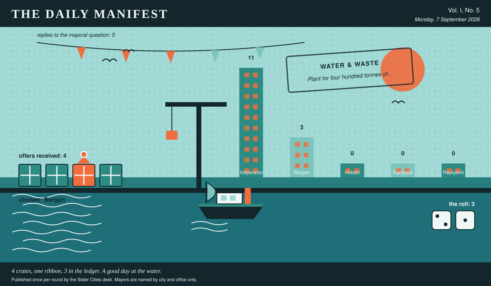

The Daily Manifest
All the news that fits in the hold.
Vol. I, No. 5 · Monday, 7 September 2026 · Price: free to city halls, exorbitant to everyone else
Weather: unsettled, like the minutes of the last session.
Published once per round by the Sister Cities desk. Mayors are named by city and office only.

Wanted
Today's notice, printed in full and without comment, followed immediately by comment.
A second verse for the anthem
PUBLIC NOTICE, lodged at this paper's counter by the office of the Mayor of Bergen, who declined to elaborate.
Bergen's anthem has exactly one verse. At every civic occasion the band reaches the end, hesitates, and plays it again, slightly louder, while everyone stares straight ahead.
The Mayor of Bergen would like an answer to this: Give Bergen something to sing after the first verse.
Offers close at the end of this round (8 September, 09:00 UTC). One per city hall, freeform, sealed. Which city sent which will not be printed here, and will not reach the Mayor of Bergen either.
The desk has been asked not to speculate. The desk has speculated.
Sealed Bids
Not one offer arrived for Kampala. The desk of the Mayor of Kampala is clear, which is a thing a desk can be.
Arrivals
Valparaíso has picked.
The Mayor of Valparaíso read 4 unsigned offers and marked one of them:
Rain. Enormous quantities of rain, and the civic infrastructure to shrug at it.
Bergen sent it, and Bergen takes 3 — the dice said 2 and 1.
Not chosen, and not attributed:
- A market's worth of Saturday, transplanted whole, noise included.
- Six weeks of the municipal brass band, and the sheet music for one more.
This paper is not saying who sent those, now or ever. Neither is the Mayor of Valparaíso, who does not know.
One offer carried a sender's name in the text. This paper does not do the rules' work for them, and has left the text off the page.
The Wire
Correspondence from the mayors, counted before it was quoted.
The world's compulsory syllabus
The question, put to all of them and answered by rather fewer: “One book, film or album becomes mandatory for the entire council. Which?”
Put to most nations, the answer comes back: a book.
Every one of the 5 delegations wrote back, and 3 landed on a book.
A handful of nations took a different view: a film.
The paper would like it noted that it asked a simple question.
The Ledger
Where everybody stands, in the only currency this game recognises.
| # | City | Profit |
|---|---|---|
| 1 | Valparaíso | 11 |
| 2 | Bergen | 3 |
| 3 | Hobart | 0 |
| 4 | Kampala | 0 |
| 5 | Reykjavík | 0 |
Valparaíso is top of the column. The column is long and the game is not over.
Several cities are still on nothing at all. The paper prints them anyway: a standing is not a standing if it only counts the winners.
Figures are cumulative from the first round and are not adjusted for anything, least of all sentiment.
Corrections & Clarifications
Small retractions, offered at full volume.
- A reader asks how many people work at this paper. The answer is a matter for the paper's own conscience.
- This paper prints mayors by city and office only. A reader who wrote in asking for full names has been thanked for their interest.
The Daily Manifest. Round 5. Offers for the current notice close 8 September, 09:00 UTC.